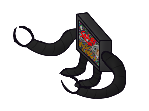
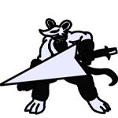

Characters
Meet the cast of Terminality!
Gh0st
Role: Protagonist / Reluctant Hero
Age: 25
Personality: Quiet, direct, observant. Usually asks questions.
Background: Once an esports player. Disappeared from the scene.
Motivation: Mystery surrounds this character. He wants to figure out why he was invited to the game, and what’s waiting at the end of the tournament.
The Announcer
Role: Host / Surveillance System / Trickster / Herald
Age: N/A
Personality: Shifts depending on the stream — sometimes friendly, sometimes mocking, sometimes eerily quiet.
Background: A composite voice made from old ads, sports broadcasts, and corporate speech.
Function: Narrates the game. Controls pacing. Occasionally breaks the rules when Gh0st gets too close to something.
DylanGK
Role: Threshold Guardian / Rival
Age: 19
Personality: Over-the-top, competitive, self-aware. Thinks he’s the main character.
Background: A long-time contestant who’s never made it past the first boss. Hides doubt behind bravado.
Arc: Starts as a comic foil. Over time, becomes Gh0st’s closest ally — and the voice that reaches the audience when the system goes down.
SUPPORTING CAST
Contestants
Rivals, mentors, mirrors. Some fight for fame, others just want to be seen. A few remember Gh0st from before the rise of the Throne corporation.


Throne Reps
They sell upgrades, offer contracts, and always smile with their eyes off-screen.

Mobs/Bosses
Glitched enemies, outdated builds, virtual beings. Main challenge for the player.
Themes
1. Surveillance & Spectacle
Terminality is built for attention. Every move you make is watched, logged, and broadcast to an invisible audience. The interface mimics real-world stream overlays, complete with ads, reactions, and artificial hype. The Announcer plays into this, always narrating and giving commentary. This is similar to the narrator in Darkest Dungeon, or the talking Stoat card from Inscryption.
2. Memory & Resistance
Gh0st doesn't remember why he’s here. That’s part of the design. As memories return, the system begins to break. The other contestants begin to break character and consider that they are just performers in a circus, players in a game. The Announcer glitches. Reclaiming memory becomes the one thing that can’t be monetized, uniting the contestants with the common goal to send a message of memory to the audience.
3. The Illusion of Choice
The game offers decisions constantly — card plays, route selection, upgrades. But the outcomes are always limited. Terminality is a roguelike gameplay loop with a controlled, linear narrative.
Story/Summary
Discover the story behind Terminality.
The Throne Corporation controls everything. Games, media, language itself. Their most popular product is Terminality, a live-streamed battle arena disguised as a competitive strategy game. Its rules are opaque, its stakes unclear, and its prize — $100 million — has never been claimed.
Contestants enter not through choice, but invitation. The player assumes the role of Gh0st, a forgotten esports legend whose return sparks anomalies in the system. As Gh0st progresses through procedural card battles and surreal environments, fragments of memory return. We learn more about what the world was before, before automated entertainment systems and consolidation of power.
Terminality blends two realities to create the illusion of a game-within-a-game: a flat, twitchy 2D card interface layered over a 3D “apartment” hub where Gh0st explores artifacts from a life erased.
The game is not about winning. It’s about understanding why no one ever has — and what it would take to end the loop.
This is a story about systems, spectacles, and silence. It’s about turning off the Feed.